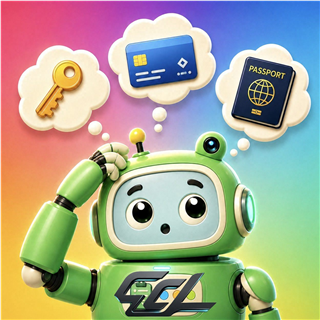

Local item and information organizer
Where Is My Stuff
Build a clear map of where things and important information are kept, while retaining control of your records.

Organize around your real space
Use locations, nested storage spaces, items, tags, notes, importance, and optional thumbnails to match the way you actually store things.
Location hierarchy
Model rooms, cabinets, drawers, boxes, or another structure, then move records as your space changes.
Find and filter
Search names and ordinary notes, or narrow item lists by tags and importance.
Recycle-bin recovery
Review deleted ordinary records as a tree and restore one record or the records deleted together.
Sensitive records
Encrypt sensitive text on the device and use password or biometric verification for protected access.
Portable backup
Create an encrypted .wimsbackup file and restore it on another installation using the backup password.
Explicit export
Create an unencrypted CSV only when requested and save it through Android's system file picker.
Free to download, with optional one-time purchases
The Free edition includes practical usage limits. A one-time Pro purchase permanently removes those product quotas. Optional virtual support badges are decorative only: they do not unlock Pro, increase limits, or provide physical goods.
Local records, Google Play purchases
Locations, items, notes, tags, sensitive content, and thumbnails are processed on your device. They are not uploaded to developer-operated servers or used for app-owned cloud sync. Google Play Billing connects to load prices, process purchases, and restore ownership. App record content is not sent through Billing.